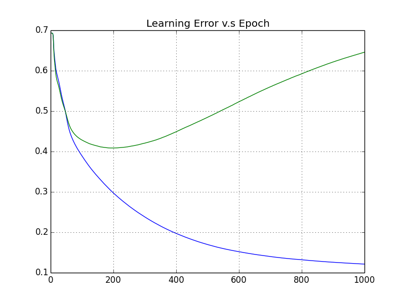
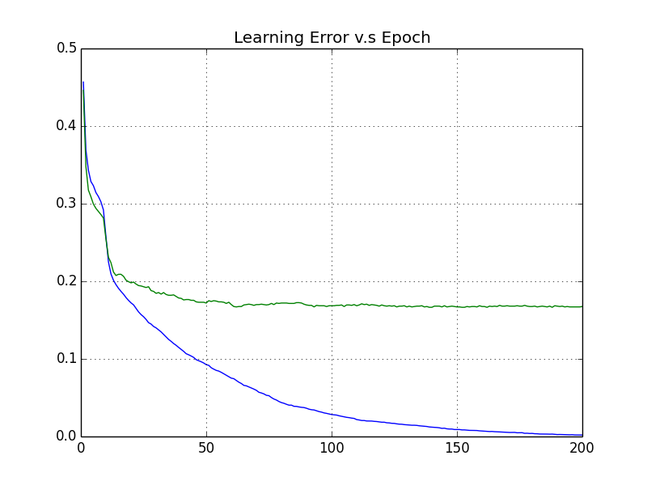
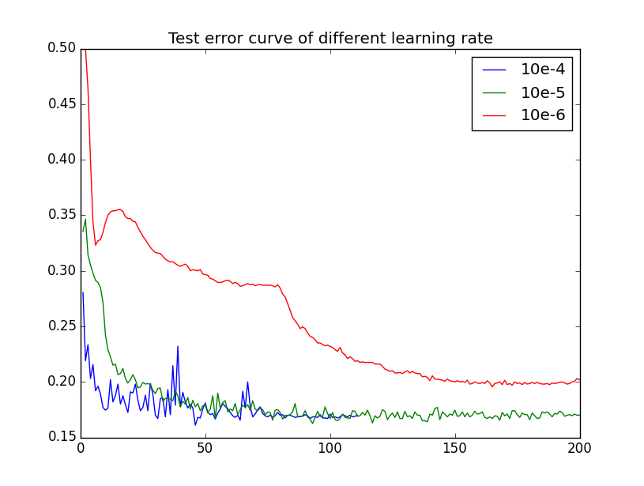

FullyConnectedDeepNeuralNetwork
About this code
This is one modularized version of fully connected neural network In the initial setting, you can specify input dimensions, number of layers and also number of node in each layers. The activation function is also flexible, which allows you to change between ReLU and Sigmoid. If you are interested in using other activation function, please add it in src/network/activations.py
Some implementations of ANN online have similar structure with this one. However, be aware that the inner implementation are slightly different. My purpose of this implementation is to show the clear forward and backward structure of Neural network, but not for high speed running.
This is not GPU version! Do not expect this one can run fast...
Please DO NOT copy this code for any kind of assignment that released by your course lecturer!
How to train deep network?
You need to generate network with single hidden layer, and set the output of the network with inputs. After converging, store the weight matrix from input to hidden layer and discard others. Then one layer by one layer, you will got all the weights of the deep network. Then, its time to generate the deep network and feed trained weights into it. Make sure to train the network as well! It at least can optimize three layers close to output!!
Settings
Network initial settings
initial_setting = {
"inputs_N" : 2, #input dimensions
"layers" : [ (20, network.ReLU),(1, network.Sigmoid)], #(number of node, type of nonlinear function)
"weights_L" : -0.1, #Random weight initialization bound
"weights_H" : 0.1, #Random weight initialization bound
"save" : False, #haven't implement this one yet
"loss" : network.CrossEntropyLoss #Cost Function you want to use Cross-Entropy or Mean Squared Error
}You can also change some of the settings later(after seeing data), then you need the following code:
replace_value_with_definition("inputs_N",n)
replace_value_with_definition("weights_L",-1.0/n)
replace_value_with_definition("weights_H",1.0/n)Cross-Entropy Objective vs Epoch Plot
Blue Line is training data curve, green line is testing data curve.(please ignore the title..)
from IPython.display import Image
Image(filename='objective.png') 
Error vs Epoch
Blue Line is training data curve, green line is testing data curve.(please ignore the title..)
from IPython.display import Image
Image(filename='error.png') 
Test Error vs Mini Batch Size
Though size of mini batch doesn't effect the final result too much, the larger mini batch will cause the curve shaking.
from IPython.display import Image
Image(filename='batchsize.png') 
Test Error vs Learning Rate
Larger learning rate can cause the curve shake, whereas smaller learning rate cause error decrease slow. The following plot shows such property. We then selecte 10e-5 as our learning rate.
from IPython.display import Image
Image(filename='learningrate.png')
Test Error vs Number of Hidden Nodes
If number of the hidden nodes is not enough, the complexity of model is limited. The network cannot optimize the objective due to the model complexity limitation. However, too large number of hidden nodes doesn't help to further improve the performance because it is already enough to represent target function. In the following plot, we show that 100 hidden nodes is enough for the task.
from IPython.display import Image
Image(filename='numberofhidden.png')
Data

Update
- Now momentum is fully activated![2016-02-09]
- Visualization for learning curve is added[2016-02-12]
- Experiment functions is built![2016-02-14]
Issue
- Haven't implement saving function. So the trained model will lose after finishing the program..
- Doesn't include random dropout mechanism. So you need to trace testing error to control training epoch..